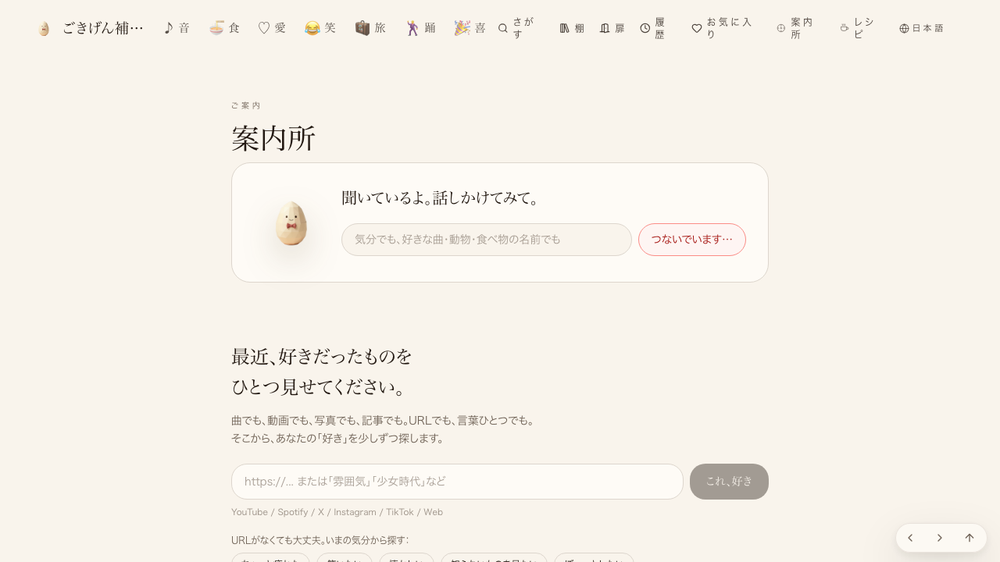
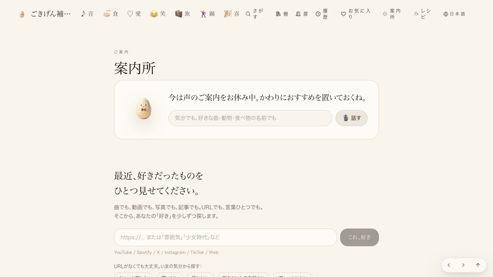

共有資料の一覧 ／ 確認ページ #908 仕組み⑬：人間なしで音声案内の通しテスト（偽マイク）＋別AI検品
#908 仕組み⑬：人間なしで音声案内の通しテスト（偽マイク）＋別AI検品
2026-09-17 実装・main合流・Lovable公開・本番で実測確認 済み
店主がマイクで実機テストしなくても、話すボタンを押す→接続→返事、を人間なしで確認できる仕組み（偽マイク通しテスト）を作った。それを本番へ実行したところ、店主が実際に報告した「話すボタンを押すと『つないでいます…』のまま固まる」不具合の実物を捕まえた。原因は、うまくいかなかった時にメッセージだけ切り替わってボタンの表示を元に戻すのを忘れていたバグ。直して本番へ公開し、3秒以内にボタンが「🎙️ 話す」へ戻ることを実測で確認した。
② 数字
約55秒→約1秒固まっていた時間（直す前→直した後）
3秒以内店主の要求（ボタンが戻るまで）を実測でクリア
3件本番へ反映したコミット数
③ 実データでのスクリーンショット（直す前 → 直した後）
直す前：クリック後もずっと「つないでいます…」のまま固まる（実測 約55秒）
直した後：クリックから4秒後、ボタンが「🎙️ 話す」へ自動で戻る
どちらも吹き出しは同じ「今は声のご案内をお休み中」（声のご案内そのものが動く／動かないの話は別件・#907で店主対応待ち中）。今回直したのは、動かなかった時に画面が固まらず、ちゃんと元の状態に戻ること。
④ 押せるリンク
コードの中身は非公開リポジトリにあるためリンクは載せていません（たまごさんが開けないリンクは載せない方針）。確認は上の本番ページと、このページの数字・画像だけで足ります。
⑤ 何をどう確かめたか（本番URLに対して人間なしで実行）
| 確認項目 | 直す前 | 直した後 |
|---|
| 話すボタンを押す | 接続(connecting)まで到達 | 接続(connecting)まで到達 |
| うまくいかなかった時のメッセージ | 「今は声のご案内をお休み中」が出る | 同左 |
| その時のボタン表示 | 「つないでいます…」のまま約55秒固まる | 約1秒で「🎙️ 話す」へ復帰 |
| 3秒ルール（店主要求） | 満たさない | 満たす（実測1〜4秒で復帰） |
| 独立検品（tamago-verifier・別セッション） | 型チェック(tsc)・lintエラー0件、ロジック確認済み |
⑥ 何を直したか（実装の中身・1行ずつ）
- 根本原因の修正接続に失敗した時、吹き出しのメッセージだけ切り替えてボタンの表示を戻し忘れていた作り忘れを修正（案内所メインのチャット部品）。
- 3秒タイムアウトを追加接続の呼び出し・つながる処理そのものに3秒の上限を設け、超えたら必ず「今は声のご案内をお休み中」へ切り替わるようにした（多重の安全策として2箇所に実装）。
- 通しテストの仕組み自体偽の音声ファイルをマイク代わりに流し、話すボタンを自動で押して接続→返事までを確認する仕組み（前回セッションで実装・main合流済み）。